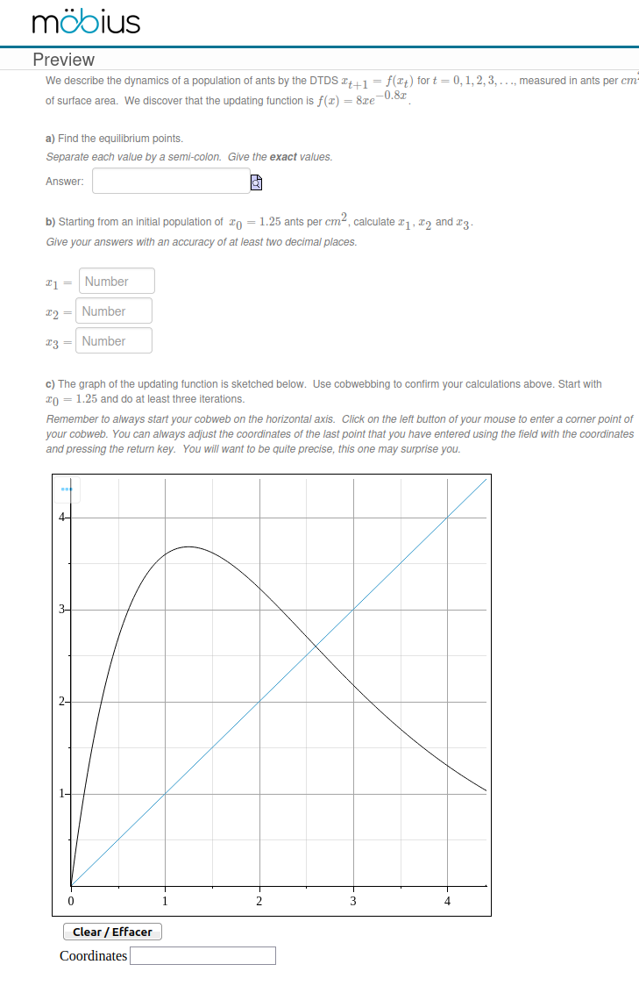
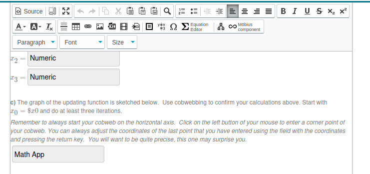
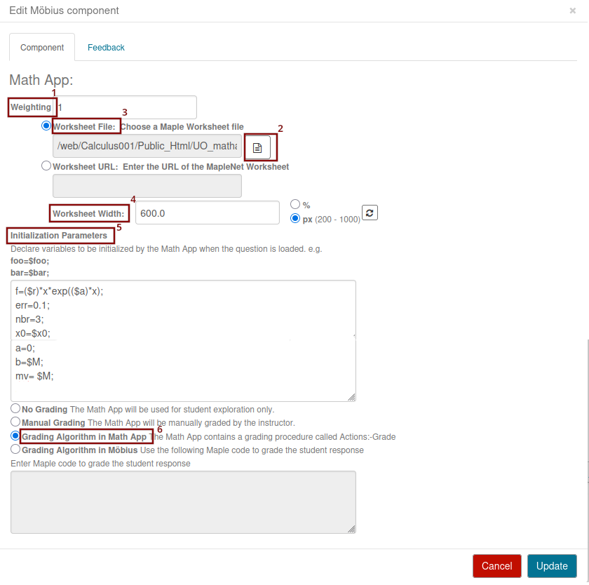

Our goal is to explain how to use Math App in questions.
Suppose that you want to include in a question a Math App where, given a function and an initial condition, students have to draw the cobweb associated to the iteration of the function starting at the initial condition. The Math App also evaluate if the cobweb is right or wrong based on a predetermined number of iterations and tolerated accuracy.
A question in Möbius using this Math App is displayed below.

To draw the cobweb, students click on the figure with the left button of their mouse to enter in consecutive order the corners of the cobweb. The Math App draws the line between consecutive points to produce the cobweb. Students may use a text area to adjust the coordinates of the point that they have just added to the figure. Students may click on the button Clear / Effacer to start over if they are not satisfy of their work.
A portion of the code to create the question in Möbius is shown below.

The Math App component is added to the question using the item Möbius component of the top menu. When you add a Math App to a question or when you click on an already present Math App, you get the following display to select the Math App and set the parameters that will be provided to it.

There is nothing else to do but to clcik on Update to complete the work on Möbius.
For the readers who would like to create their own Math Apps, we explain in the document how to create the Math App UO_DDS_cobweb.mw used in the example above.